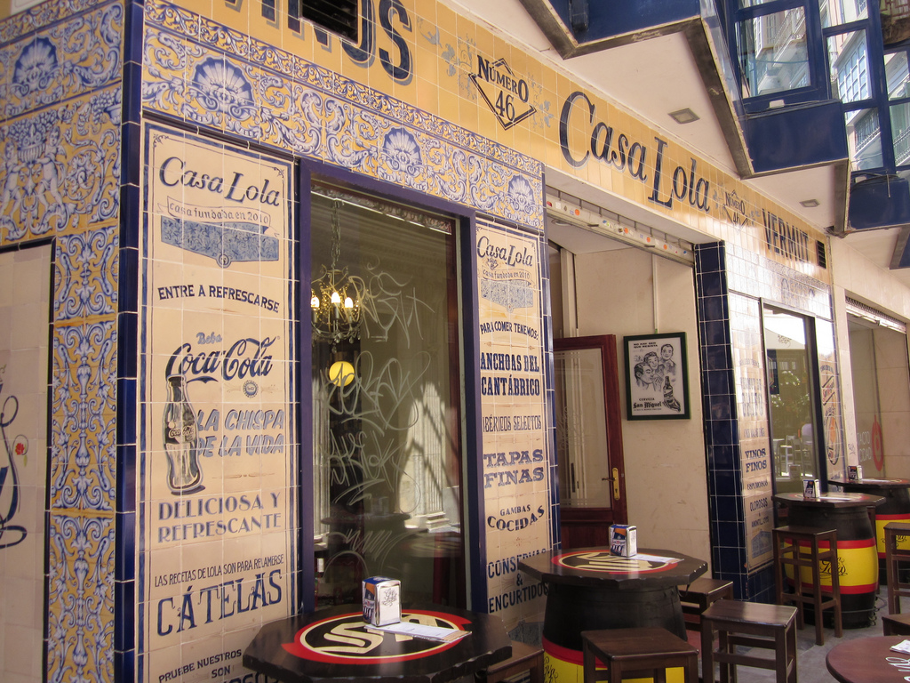
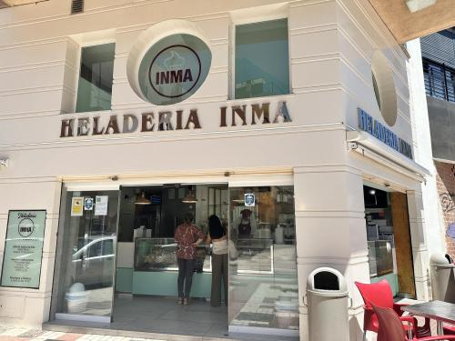
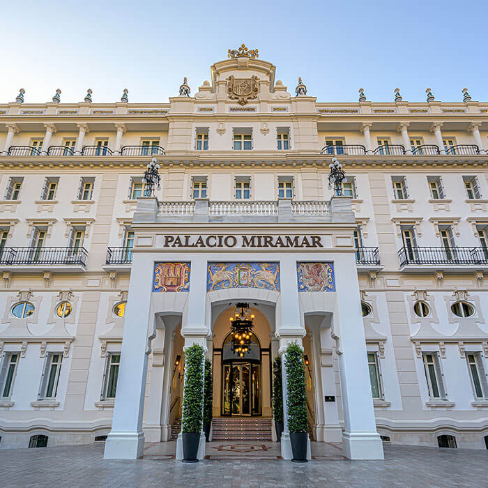

El Pimpi
- One of Málaga’s most iconic restaurants, El Pimpi is famous for its Andalusian cuisine, lively atmosphere, and walls decorated with photos of celebrities who have visited. It’s the perfect place to experience local traditions.
- Founded in 1971, located in a historic 18th‑century mansion in the city center.
- Known for its extensive wine cellar and traditional Andalusian dishes.
- A cultural landmark decorated with photos of celebrities and local artists.
- El Pimpi features charming outdoor terraces with views of the Alcazaba and Roman Theatre, making it a perfect spot to enjoy Málaga’s atmosphere.
- C. Granada, 62, Distrito Centro, 29015 Málaga, España
- https://www.elpimpi.com/reservas/

Casa Lola
- This festival is one of the most important film festivals in Spain. It focuses on promoting Spanish cinema and showcases a variety of films, including feature films, documentaries, and short films. It started in 1998 and it aims to promote Spanish and Latin American productions.
- Affordable and popular with locals and visitors
- Located in the city center, making it easily accessible
- Offers a variety of traditional Spanish dishes and tapas
- C. Granada, 46, 29015 Málaga, España
- https://grupocasalola.com/

La Inma
- La Inma is a traditional Málaga restaurant loved by locals for its homemade Andalusian dishes, generous portions, and welcoming atmosphere. It offers visitors an authentic taste of everyday Málaga dining.
- A beloved local restaurant offering authentic homemade Andalusian dishes
- Known for generous portions and affordable prices
- Popular among residents, giving visitors a true “eat like a local” experience.
- Casual, welcoming atmosphere that reflects Málaga’s everyday charm
- C. San Juan de Letrán, 12, 29005 Málaga, España

Metro
- The Metro de Málaga is a modern light rail system that serves the city of Málaga and its metropolitan area. It provides an efficient and convenient way to travel around the city, connecting key neighborhoods and points of interest.
- Two lines (Line 1 and Line 2) covering key areas of the city
- Modern, clean trains with air conditioning
- Frequent service with trains running every few minutes during peak hours
- Affordable fares with options for single tickets, day passes, and multi-ride cards
- Website: https://metromalaga.es/
Airport
- Málaga-Costa del Sol Airport (AGP) is the main international airport serving the Costa del Sol region in southern Spain. It is one of the busiest airports in Spain and a major gateway for tourists visiting the area.
- Located approximately 8 kilometers southwest of Málaga city center
- Serves numerous domestic and international destinations
- Modern facilities with shops, restaurants, and car rental services
- Efficient public transport connections to Málaga and surrounding areas
- Av. del Comandante García Morato, s/n, Churriana, 29004, Málaga, España
- Website: https://www.aena.es/en/malaga-costa-del-sol.html
Gran Hotel Miramar
- Gran Hotel Miramar is a luxurious 5-star hotel located in Málaga, Spain. Housed in a beautifully restored historic building, the hotel offers elegant accommodations, stunning views of the Mediterranean Sea, and top-notch amenities.
- Located on the beachfront with stunning sea views
- Elegant rooms and suites with modern amenities
- Multiple dining options including fine dining and casual eateries
- Spa and wellness center offering a range of treatments
- Outdoor pool and lush gardens for relaxation
- Paseo de Reding, 22, 29016 Málaga, España
- Website: https://www.granhotelmiramar.com/
